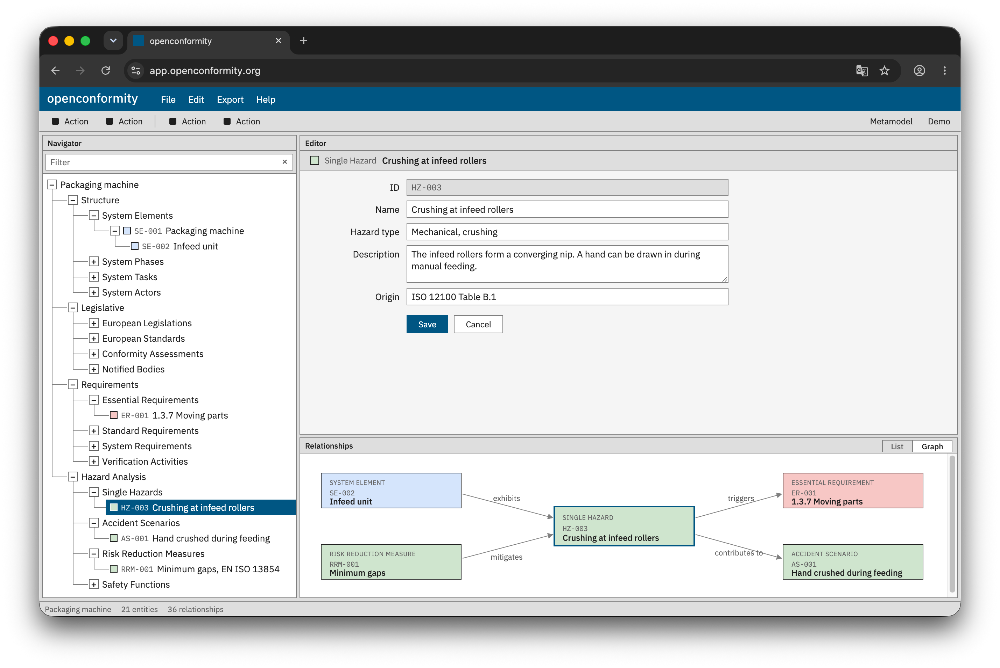
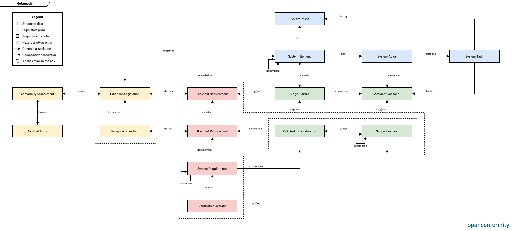

Free and open-source
EUPL-1.2 licensed, with no commercial interest behind the project.
CE marking has many inherent relationships. The essential requirements, the harmonized standards, the identified hazards, and the risk reduction measures all trace to one another in different ways. This project attempts to develop a tool that holds all of this together as one shared model, from which the engineering artefacts can be exported.
The tool is currently in development, and the demo is preview-only with fixed example content.

EUPL-1.2 licensed, with no commercial interest behind the project.
No account and no server, so each project is saved as a local file on your machine.
Nothing to install or maintain, just open the page and start working.
No box ticking, and no statement on the safety or compliance of the machine.
An entity is created once and related to the others, never repeated.
Export the results, intended as input to whatever process you already have.
The machine is decomposed into a hierarchical set of system elements. The whole life cycle is defined as system phases, with system tasks associated with every phase. The system actors, such as operators or technicians, are related to each of the tasks. Every entity carries the attributes needed to define the machine fully.
The directives and regulations that apply to the machinery are recorded. A machine may be subject only to the Machinery Regulation, or also to the Electromagnetic Compatibility Directive and others. The scoped legislation is then used to select the essential requirements that apply.
Considering the system elements, the single hazards are identified. Moving parts, live circuits, pressurised equipment, or ejected parts, each related to the system element that exhibits it.
A short circuit can lead to both fire and electric shock. One hazard can lead to several accident scenarios, and one accident scenario can arise from several hazards. Both are modelled through relationships, rather than rewritten for every scenario.
Based on the identified hazards, the essential requirements in the applicable legislation are selected. Which requirements apply depends on the hazards the machinery exhibits.
As part of the strategy for presumption of conformity, a harmonized standard is applied. The requirements in the standard satisfy the essential requirements in the corresponding legislation. Mapping a standard requirement to an essential requirement records the presumption of conformity.
A risk reduction measure is described conceptually, covering one or several hazards or accident scenarios. The standard requirements are related to each measure, for traceability and to make full use of the standard. A measure may require a safety function, which is derived alongside it.
Somewhere it needs to be stated how the machine shall be built. The system requirements are derived as shall-statements, each describing a function or quality the machine needs to fulfil. Each requirement is related to the verification activities that will show it has been met.
When the engineering work has been done, the artefacts can be exported. An artefact may be a requirement specification, a hazard list, or a list of essential requirements with their mapping to the standard requirements. These views are exported as the result of the work, ready to import into whatever process or tool the user has.
A metamodel can be explained as a model of a model. Hardcoded into the tool, it defines which entities exist and how they may be related to one another. The relationships form chains that can be followed in either direction, from a system element down to a risk reduction measure, or from that measure back to the system element.
